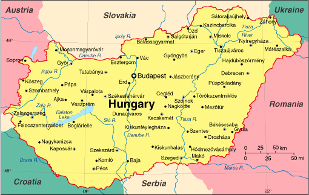

Welcome to this website on the historical sites, natural sites, and cities that can be found in Hungary. If you are a tourist hoping to visit Hungary, or are a Hungarian hoping to go back, I hope that this website is able to uncover in an interactive way some of the treasures of this country, while teaching you something new!
Deep Overview
The sections on the left are constructed to provide a deep overview of Hungary's geographical reality and position, as well as its historical past. The sections will introduce you to a basic knowledge base that will make studying the national parks and historical sites that more interesting. It is a great place to start to get familiar with Hungary! The historical page is split up by time period or era, and the geographical page is split by geographical region. This way you can find information on the era or region that most interests you.
Historical Sites
Check out some of Hungary's medieval castles and churches that have been preserved to this day, and uncover their fascinating stories. You may also visit the map below to get a sense of where these sites are located across the country! The map will also link you to some pages with more in depth information of these sites!

Hiking and Parks (National Parks)
Check out Hungary's 10 national parks! The parks contain some of Hungary's most iconic spots from every part of the country. These include parks from the Transdanubian mountains / plains, the Alpine foothills, the Northern mountains, and the Great Hungarian Plain. They show the variety of biomes and regions within the small country of Hungary, and reflect on its true central European feel. It contains a bit of the west, south, and east as well! Check out the map below to see all the majour hiking opportunities in a graphical way.